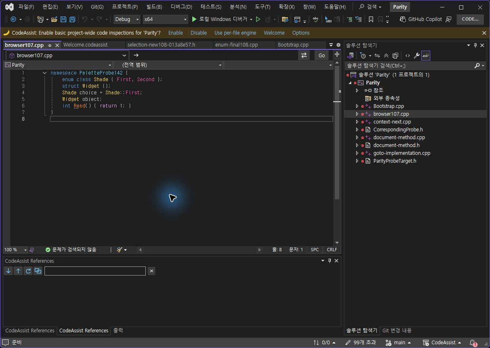
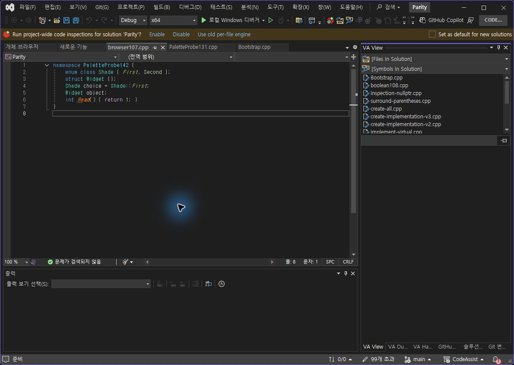
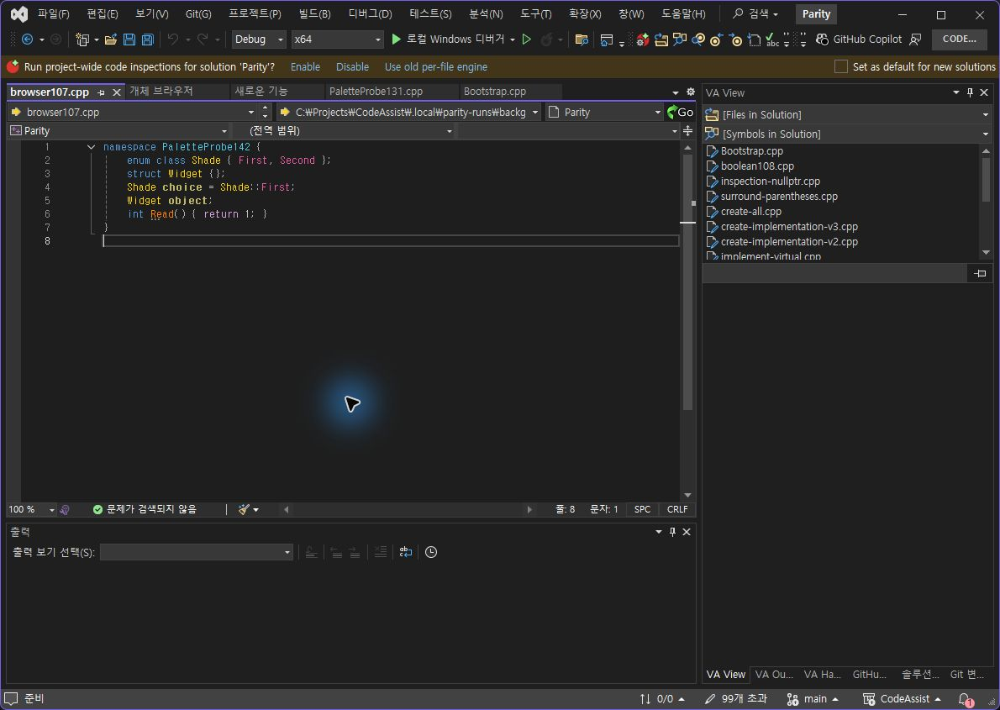
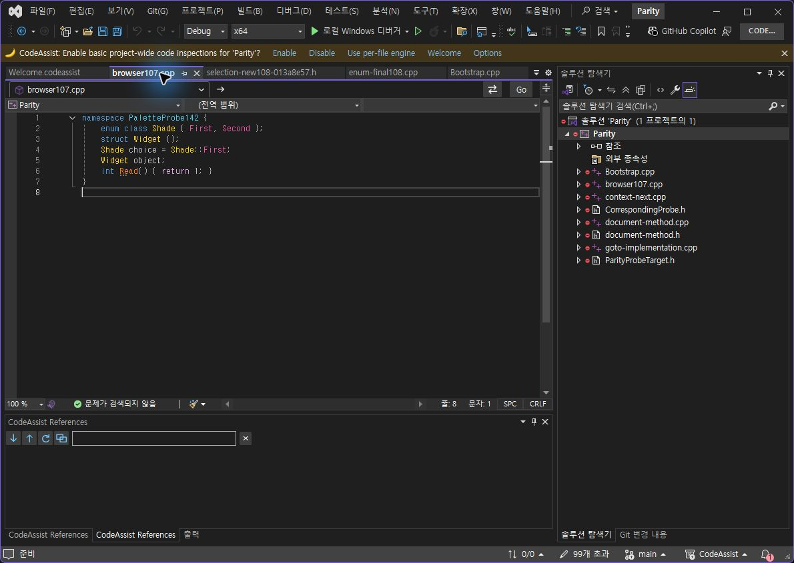
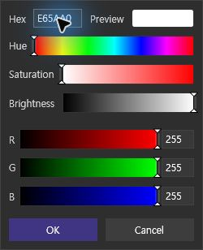
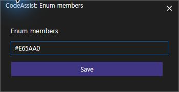
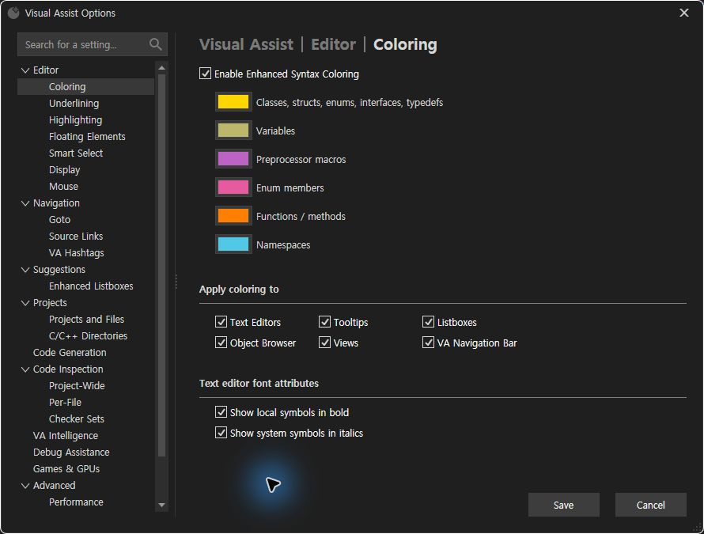
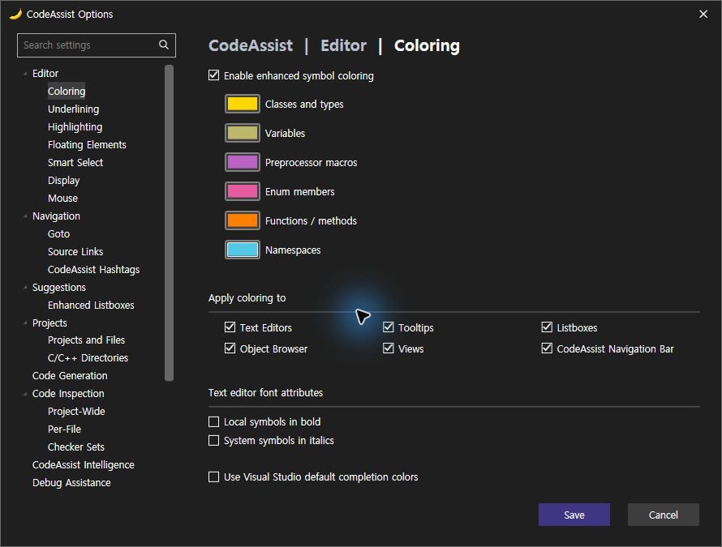
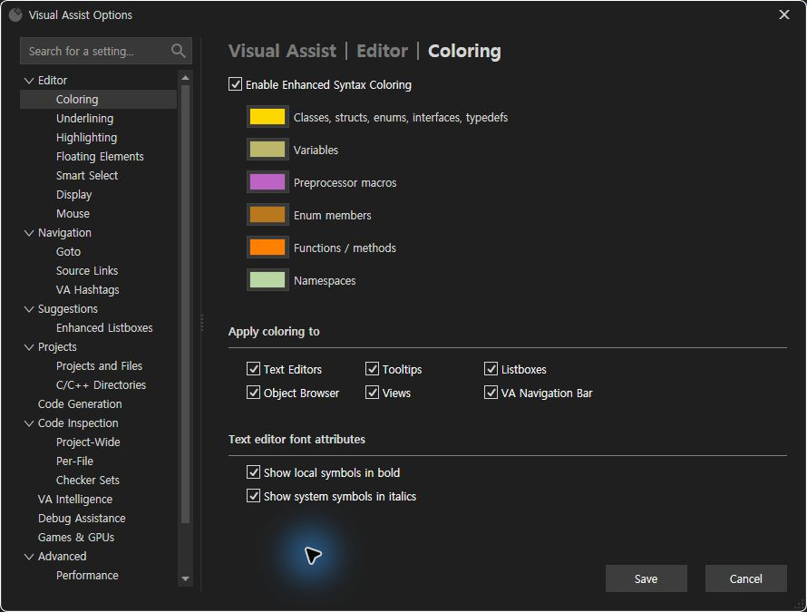
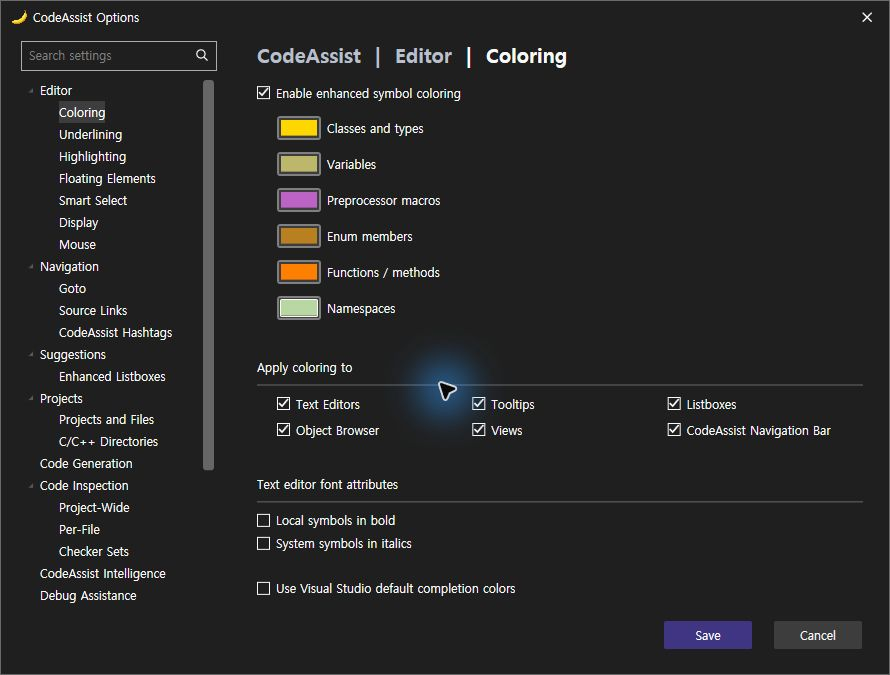

Tracefolio REPORTS & ISSUES
Tracefolio REPORTS & ISSUESenum·namespace 사용자 지정 색상 실행 대조
기존 기록 이전원문에 기록된 작업 내용과 당시 검증 범위를 정리한 보관 기록입니다.
VA·CA 사용자 지정 색상 대조150
enum·namespace 사용자 지정 색상 실행 대조
설치 CA0.0.149 · 기록 2026-10-24T06:43:29+09:00
이번 표본4/4개(100%) 일치: 두 종류의 사용자 색상 적용과 재시작 후 새 편집기 화면의 색상. 선정 옵션 대조 근거10/12개(83.33%). 여러 버전의 선정 근거이며 제품 전체 동기화율이 아닙니다. 선정 설정 변경 출력은9/12개(75%); 기존 On/Off 범위7/12는 색상 값 변경과 구분해 그대로 유지합니다.
동일 조건
양쪽 프로젝트에 포함된 동일 browser107.cpp, namespace PaletteProbe142, enum Shade의 First/Second 선언과 Shade::First 사용을 확인했습니다. 편집기 전체 소스가 정확히 같고 시험 중 수정하지 않았습니다.
| 설정 | 동일 시험값 | 관찰 |
|---|---|---|
| Enum members | #E65AA0 / RGB230,90,160 | 선언·사용 위치에 분홍색 적용 |
| Namespaces | #50C8E6 / RGB80,200,230 | namespace 이름에 청록색 적용 |
VA와 CA 저장값을 각각 실제 레지스트리·설정 XML에서 읽어 정확한 RGB 일치를 확인했습니다. 화면은 색상 범주를 시각 확인했으며 JPEG 촬영본의 픽셀 완전 일치로 판정하지 않았습니다.
재시작의 한계
두 검사 프로필을 정상 종료·재실행했습니다. 양쪽 저장값은 유지됐고 CA는 다시 열린 파일에서 즉시 사용자 색상을 표시했습니다. VA의 자동 복원 화면은 처음 기본 색상으로 보였고, 같은 파일을 닫고 다시 열었을 때 사용자 색상이 표시됐습니다. 따라서 저장 유지·새 화면의 결과를 확인했으며 시작 직후 동작 시간까지 동일하다고 인증하지 않았습니다.
확인된 UI 차이
VA는 Palette/Web/System 탭과 사용자 슬롯 우클릭의 Hex·Hue·Saturation·Brightness·RGB 편집기를 제공합니다. CA는 별도 창에서 Hex만 입력합니다. 두 선택기의 레이아웃과 컨트롤은 다르며 수정 대상입니다. 사용한 VA 사용자 색상 입력 방법은 공식 안내와 실제 실행으로 확인했습니다.
원복
VA의 원래 enum #B9771E·namespace #B8D7A3, CA의 원래 enum #B88020·namespace #B9D7A2로 각각 정확히 복원했습니다. 이는 현재 사용자 설정이며 공장 기본값으로 단정하지 않습니다. 기능 색상 외 사용자 팔레트 슬롯 이력까지 원복됐는지는 인증하지 않았습니다. 문서 저장 상태도 확인했습니다.
판정 JSON · 재시작 후 실제 저장값 · VA 소스/선택 · CA 소스/선택 · VA 복원값 · CA 복원값 · 실행 CA DLL · 직전 추천 색상 수정
화면 대조
va-immediate
[
ca-immediate
[ 
va-restored-view-after-restart
[ 
va-custom-after-reopen
[ 
ca-custom-after-restart
[ 
va-custom-picker
[ 
ca-custom-picker
[ 
va-test-options
[ 
ca-test-options
[ 
va-restored-options
[ 
ca-restored-options
[ 
남은 작업
스니펫 VA 대조(사용자 파일 시험 승인 대기), 실제 키 홀드 반복률, 색상 선택기 UI, 툴팁 추가 행, 추천 창 디자인·설명, 실행 취소 차이와 전체108항목의 현재 빌드 인증이 남습니다. 전체 목표는 계속 진행 중입니다.
분석율: 문서·도움말 기반 부분 명세108/108(100%). 전체 역분석 완료율과 다릅니다. XERJ 사용: EnumMemberColor 검색 후 현재 소스 대조.
제안 시간20~30분. 이번 검증·기록까지 21.0분. 전체 목표 미완료.
원문과 편집 이력
- 원문 SHA-256:
4fc09e1f9fd371cbb8790ecc2e11d5e9c16f297d05859492670837592d4a4e15 - 표시 날짜는 원본 파일의 수정 시각입니다. 작업 완료 시각은 원문에 있는 값을 기준으로 확인합니다.